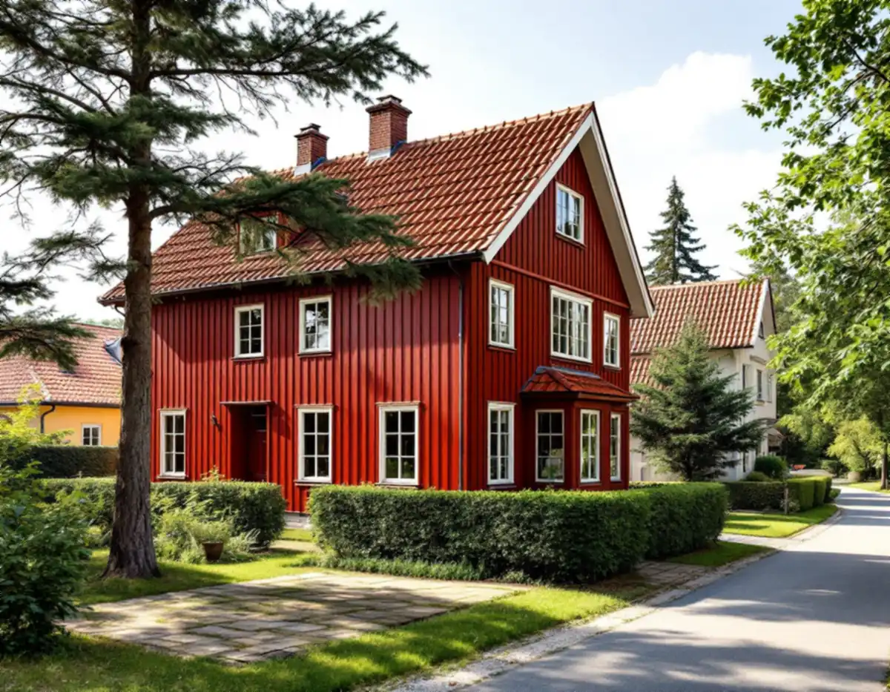
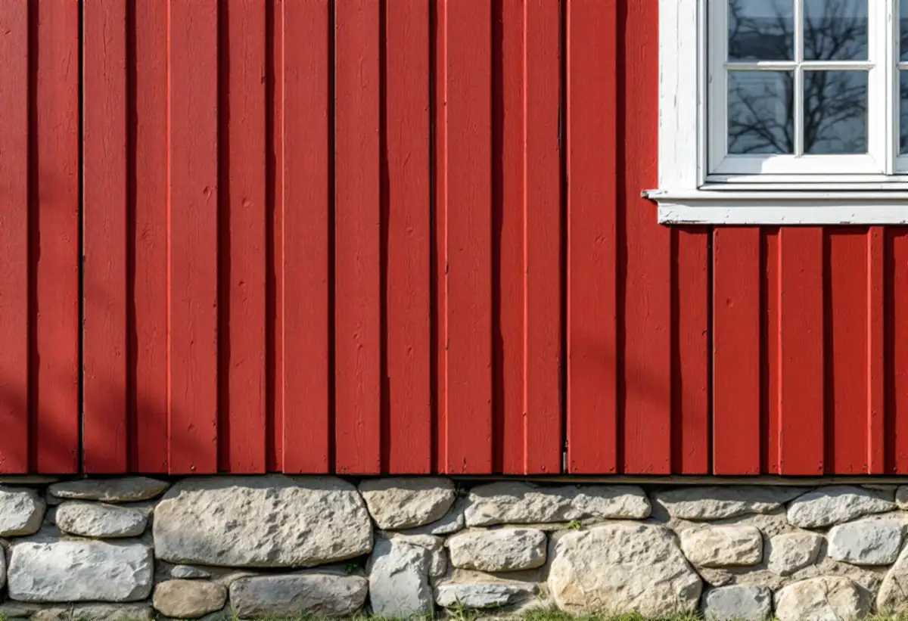

Utredningen först
Ligger huset i ett riksintresseområde läser vi rådet i kommunens kulturmiljöutredning.
Norrtälje kommun har 26 riksintresseområden för kulturmiljövården och har låtit utreda 22 av dem. Utredningarna innehåller råd till den som bor i områdena, och flera av dem gäller fasaden: laga hellre än byt, behåll originalmaterialet och anpassa ny panel till huset. Geal Entreprenad AB renoverar fasader i Norrtälje stad, Hallstavik, Grisslehamn och övriga Roslagen, med gratis platsbesök och skriftligt kostnadsförslag.

Hallsta pappersbruk planlades 1913 av Holmens bruk i Norrköping. Arkitekten John Åkerlund planerade den första etappen av brukets bostäder i trädgårdsstadens anda, med vägar och tomter anpassade efter terrängen. Rödvillorna byggdes 1914–1915 och stod klara när den första arbetsstyrkan från Norrköping kom i juli 1915.
Kulturmiljöutredningen för Hallstavik från 2016 beskriver en enhetlig, lantlig arkitektur med tegelbelagda sadeltak, rödmålad locklistpanel och vitmålade fasaddetaljer. Husen byggdes i två varianter: 29 tvåfamiljshus med två lägenheter om två rum och kök, och fyra något större enfamiljshus som var tänkta för förmän.
Utredningens råd är tydliga. Vid renovering av fasader och fasaddetaljer förordas i första hand lagning eller byte av skadade delar, och Rödvillorna målas med faluröd slamfärg. Ny fasadpanel ska anpassas till huset i utformning och material. Vi byter därför bara de brädor som är skadade och väljer en locklistpanel med samma mått som den gamla.

Samtidigt med Rödvillorna byggdes tjänstemannavillor med sjöutsikt norr om fabriken. Arkitekten Folke Bensow ritade 1916 en ingenjörsbostad för en familj, under 1920-talet följde egnahemsområden söder om bruket och längst i norr uppfördes tio tjänstemannavillor av en typ som Stig Dranger ritade 1951. Utredningen beskriver hur husens placering, storlek och utformning speglar brukets sociala skiktningar.
Det första rådet i utredningen är att värna varje utbyggnadsetapps ursprungliga karaktär, både i formgivning och material. Färgerna ska väljas efter respektive etapp, och äldre fönstersnickerier av trä beskrivs som ofta mycket välgjorda. De målas med linoljefärg, och renovering föredras framför byte.
För en fasadrenovering betyder det att en villa från 1910-talet och en från 1950-talet inte ska få samma panel bara för att de ligger i samma samhälle. Går fönstren inte längre att renovera finns mer under fönsterbyte i Norrtälje.
Grisslehamn var en knutpunkt för postvägen mellan Stockholm och Åbo via Åland, en postgång som löpte i närmare 300 år. Kulturmiljöutredningen för orten, också från 2016, beskriver ett posthus från 1756, gränsposteringens byggnader från 1800-talet och en kustmiljö med sommarvillor och pensionat från det tidiga 1900-talet.
Råden är tydliga. Byggnadernas ursprungliga exteriör får inte förändras genom till exempel byte av fasadmaterial, fönster, takmaterial eller färgtyp och kulör. Underhåll bör ske varsamt med traditionella metoder och material, och variationen mellan husen bör bevaras eftersom materialen berättar om äldre hantverk och byggteknik.
Boverket ger en teknisk förklaring till varför det är klokt. En fasad ska framför allt hindra regn från att tränga in, och skadorna uppstår ofta där material möts, vid fönster och infästningar. Därför lagar vi sådana detaljer med samma material som tidigare. Om kulören finns mer hos målare i Norrtälje.
Norrtälje kommun listar när fasadändringar kräver bygglov. För en- och tvåbostadshus nämns bland annat utökad lovplikt i detaljplanen och fastigheter i områden som är särskilt värdefulla, och kommunen har en karta där du kan kontrollera det. Boverket förklarar att reglerna sedan den 1 december 2025 annars inte kräver lov för kulör eller fasadmaterial på sådana hus.
Kommunen ger allmän rådgivning men kan inte bedöma enskilda åtgärder via e-post eller telefon. Vill du ha ett bindande besked behöver du söka frivilligt bygglov, och kommunen fattar beslut inom tio veckor från att ärendet är komplett. Läs mer om material och metoder på sidan om fasadrenovering.
Ligger huset i ett riksintresseområde läser vi rådet i kommunens kulturmiljöutredning.
Panel, foder, bleck och sockel gås igenom, och vi mäter de befintliga profilerna.
Lagning och byte av delar redovisas för sig, med material och färgtyp angivna.
Vi stämmer av kartan och detaljplanen och om frivilligt lov är värt att söka.
Skadade brädor byts mot likadana och anslutningar vid fönster och tak görs om.
Vi går runt huset tillsammans och går igenom underhållet framåt.
Att byta och reparera fasader, tilläggsisolera, måla fasader och reparera eller byta fönster räknas som rotarbete i ett småhus. Byggnadsställningar som monteras för arbetet ger också avdrag.
Avdraget är 30 procent av arbetskostnaden, högst 50 000 kr per person och år och högst 75 000 kr tillsammans med rutavdrag. Material och resor ger inget avdrag. Geal drar avdraget direkt på fakturan.
Hur många brädor och foder som måste bytas, om profilen måste tillverkas särskilt, vilken färgtyp som ska användas och avståndet till huset. En villa i Hallstavik och en sommarvilla i Grisslehamn kan kräva helt olika material. Efter ett gratis platsbesök får du ett skriftligt kostnadsförslag.
Puts, panel och tilläggsisolering.
Fasadrenovering i Stockholm →Takbyte, takbesiktning och plåtarbeten.
Takläggare i Norrtälje →Roslagen, skärgård och fritidshus.
Takrenovering i Norrtälje →Stugtomter, strandskydd och avlopp.
Attefallshus i Norrtälje →Fritidshus, WC-tillstånd och brunn.
Badrumsrenovering i Norrtälje →Nytt hus, förhandsbesked och egen brunn.
Byggföretag i Norrtälje →Ljust bostadshus och röda uthus.
Fasadmålning i Norrtälje →Roslagens hus, bruksorter och bidrag i Norrtälje.
Fönsterbyte i Norrtälje →Gårdar, timmerhus och lösa innerbågar i Roslagen.
Fönsterrenovering i Norrtälje →Plankgolv i gamla gårdar och parstugor.
Golvläggare i Norrtälje →Från slipat eller lackat golv till skurgolv.
Golvslipning i Norrtälje →Gasolspis, vedspis och pentry i gäststugan.
Köksrenovering i Norrtälje →Trähus, fritidshus och kustlägen i Norrtälje.
Målare i Norrtälje →Takskydd, rännor och skorstensplåt i Norrtälje.
Plåtslagare i Norrtälje →Fritidshus, altan och gäststuga.
Snickare i Norrtälje →Kust, snö och Roslagens tak.
Takbyte i Norrtälje →Ny tapet i fritidshus och villor.
Tapetsering i Norrtälje →